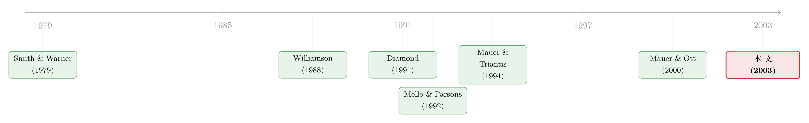

会变通的公司，到底是借得更多，还是更少？
本文读的是 MacKay (2003, Review of Financial Studies)：一家公司在生产和投资上「越能随机应变」，它的杠杆是更高还是更低？作者用美国普查局的工厂级数据，从企业的一阶条件里估出三种「生产柔性」和三种「投资柔性」，然后去和杠杆、债务期限、公私债结构对账。结论是个漂亮的劈叉——生产柔性压低杠杆，投资柔性抬高杠杆。前者因为股东能借「变产量」来偷偷转移风险、合同管不住；后者因为「能拆能卖」的资产更值钱做抵押，而卖资产这件事可以靠契约拦住。
1 一个被忽略的矛盾
谈资本结构的时候，我们习惯把公司想成一台「定型」的机器：技术给定、资产给定，剩下的问题只是往里灌多少债、多少股。可现实里的公司远比这复杂——它能换原料、能切换产品线、能临时加减班、能扩厂也能关厂。一句话，公司是会变通的。
那么，会变通这件事，对它能借多少钱，到底是好事还是坏事？
直觉会立刻给你两个相反的答案，而且两个听起来都对。
第一个答案是「好事」。一家随机应变能力强的公司，遇到坏年景能缩产、能换更便宜的投入、能把厂房卖给别人，因此它更不容易违约，抵押品也更好脱手。债主看在眼里，自然愿意多借给它——这是「价值假说」(value hypothesis)。
第二个答案是「坏事」。同样一身「随机应变」的本事，换个角度看就是股东手里多了一把把实物期权(real options)：一旦借到了钱，股东完全可以反手把资产、产量、产品组合调向更冒险的方向，把风险甩给债主。理性的债主预见到这种事后机会主义，会用更苛刻的条款来回应，逼得灵活的公司少借债——这是「代理假说」(agency hypothesis)。
同一种「柔性」，在价值假说里是「不容易倒」，在代理假说里是「容易赖账」。理论两头都说得通，所以谁对谁错，只能交给数据。这正是这篇论文要做的事。
MacKay 的野心，是要把这场「公说公有理」的争论，第一次拉到工厂车间里去做一次直接的实证检验。而要做到这一点，第一道难关甚至不是计量，而是：「柔性」这个词，到底怎么量？
2 把「会变通」翻译成一个弹性
这是全文最聪明、也最容易被一句话带过的一步，值得慢慢说。
我们没法直接观察一家公司「有多灵活」。但作者注意到：灵活，本质上就是边际生产和投资决策对外部环境变化的敏感度。一家技术僵硬的化工厂，原料涨价了也只能照旧投料；一家柔性的工厂，原料一贵就立刻改用替代品。前者的「投入随价格变化」近乎为零，后者则很大。换句话说——
柔性 = 企业最优决策对价格/环境冲击的弹性。
于是问题就转化成了一道标准的生产经济学 (production economics) 题：把企业的优化问题写出来，估出它的目标函数，再对这个目标函数做比较静态 (comparative statics)，算出一组弹性，拿弹性当柔性的代理变量。
作者假设企业同时解两个优化问题。短期是静态的生产决策：在既有产能下，挑一个生产方案 \(v\)（两种产出 \(Y,Z\)、两种投入 \(L,P\)）最大化当期预期税前现金流：
$$ \Pi(v\mid \bar p,\dot k,k,\beta)\equiv \max_{v}\; E_t\big[\,p\cdot v(p)\mid p_{\tau\le t}\,\big]\quad\text{subject to}\quad v\in V(\dot k,k) $$
这里 \(V(\dot k,k)\) 是由技术决定的「生产可能集」，它既圈定了能怎么生产，也因为依赖资本存量 \(k\) 和投资 \(\dot k\) 而暗暗圈定了投资的回旋余地。
长期则是动态的投资决策：挑一条产能积累路径 \(\{\dot k_\tau\}\)，最大化现金流的期望现值。这条方程是整篇论文的脊梁，我们把它单独拎出来标注一下：
直觉是这样的：短期的 \(\Pi(\cdot)\) 告诉你「这套产能现在能榨出多少钱」，减掉持有产能的租金成本 \(r\cdot k\)，再沿时间贴现加总，就是企业的总价值。企业要做的，就是选一条投资路径让这个积分最大。对它求一阶条件，得到的就是一组欧拉方程 (Euler equations)，它把不同时点的投资决策串在一起——而正是「调整成本、不可逆性、建造时滞」这些约束，让投资变得不能想改就改，从而内生出了投资柔性的概念。
技术上，作者用 Diewert and Wales (1987) 的对称广义 McFadden (symmetric generalized McFadden) 函数形式来刻画目标函数，对生产方程用 Hotelling 引理、对投资方程用欧拉方程，再按行业、用工厂级数据跑三阶段最小二乘 (three-stage least squares, 3SLS) 把技术系数 \(\hat\beta\) 估出来。有了 \(\hat\beta\)、预测价格 \(\bar p\) 和工厂的实际变量，柔性指标就能一个个算出来。
接着，把六个柔性指标摊开。生产柔性有三种：
- 工艺柔性 (process flexibility)：劳动与材料之间的替代弹性 \(\varepsilon_{LP}\)，衡量「相对要素价格变了，能不能换投入」。
- 产品柔性 (product flexibility)：两种产品之间的替代弹性 \(\varepsilon_{YZ}\)，衡量「相对产品价格变了，能不能换产出」。
- 产量柔性 (volume flexibility)：现金流对产量的弹性 \(\varepsilon_{\Pi Q}\)：
$$ \varepsilon_{\Pi Q}\equiv\left|\frac{\partial \ln\hat\Pi(\cdot)}{\partial \ln Q}\right|=\left|\frac{\partial \hat\Pi(\cdot)}{\partial Q}\cdot\frac{Q}{\hat\Pi(\cdot)}\right|,\qquad Q\equiv Y+Z $$
它衡量技术的「线性程度」——当 \(|\ln(\varepsilon_{\Pi Q})|\to 0\)，技术完美线性，企业可以无成本地缩放产量，柔性最高。
投资柔性则用资本的实际租金与影子租金之间的「楔子」来刻画企业调整厂房 (\(B\))、机器 (\(M\))、人手 (\(W\)) 三类存量的能力。
到这里，准备工作做完了。一个自然的问题是：把这六个指标塞进回归，符号会怎样排队？
3 识别策略：让符号自己站队
作者的检验框架其实朴素得近乎暴力：把三个财务结构比率分别对六个柔性指标回归，看系数符号。
三个被解释变量是资本结构的三个维度：
- 财务杠杆 (financial leverage)：总债务 / 总资产；
- 期限结构 (maturity structure)：长期债务 / 总债务；
- 信用结构 (credit structure)：公开债务 / 总债务。
控制变量包括盈利能力（现金流/总资产）、风险（实物资本/总劳动成本、现金流波动率）、多元化（1 减去产出的 Herfindahl 指数）和公司规模（总资产对数）。
识别的逻辑全压在符号上，而符号本身就是对两个假说的判决：
柔性指标的系数为正 → 支持价值假说：灵活的（低专用性的）资产事后清算价值更高、事前抵押价值更大，所以债主敢多借。 柔性指标的系数为负 → 支持代理假说：柔性扩大了投资机会集、便利了资产替代和风险转移，债主收紧条款，企业少借。
这套设计的好处是干净，软肋也明显——它本质上是横截面相关性，柔性指标又是从同一批数据估出来的生成变量。这一点我们留到最后再算账。先看结果，因为结果出乎意料地漂亮。
4 反转：一道整齐的劈叉
如果你预期六个柔性指标会整齐地朝同一个方向走，那就猜错了。真正关键的发现，是它们劈成了两半。
生产柔性这一半，全面支持代理假说。 能轻松调整要素强度、产品组合、产量水平的公司，普遍用更低的杠杆、更短的期限、更少的公开债。三种生产柔性指标，在三个财务结构维度上，给出的几乎是一致的负号。这说明债主确实在「未雨绸缪」：他们预见到股东会借生产柔性来事后转移风险，于是用更高的成本、更短的久期、更密的银行监督来回应，把灵活公司的均衡杠杆压了下去。
其中，产量柔性的经济影响最大。作者让单个柔性指标从第 5 百分位变到第 95 百分位、其余变量按样本均值固定，来看预测的财务比率怎么动：产量柔性从低走到高，预测的总债务/总资产下降 3.61%，预测的公开债务/总债务下降 2.49%。在一堆资本结构决定因素里，这个量级是相当可观的。
投资柔性这一半，却倒向了价值假说。 拥有灵活厂房和灵活劳动力的公司，反而用更多的杠杆、更多的公开债。作者的解读很关键：投资柔性意味着资产「能拆能卖、能进能出」，抵押价值更高，所以提升了债务容量；而「卖掉资产去换更险的资产」这种资产替代，是可以靠限制资产出售的契约 (restrictive covenants on asset sales) 拦住的。劳动力柔性的正号尤其有意思——能自由招人和裁人降低了违约风险，而劳动专业化等因素又恰好堵住了风险转移的口子。
把两半合起来，全文的核心命题就立住了：
资产替代可以靠合同事前防住，风险转移却防不住。 投资柔性带来的资产替代，债主写几条「不准卖资产」的条款就能管住，于是柔性净增了债务容量；而生产柔性带来的风险转移——临时改产量、换投入、调产品——是契约难以约束 (intractable) 的，因为没人能在合同里写死「你每年只能生产多少、只能用什么原料」。防不住，债主就只能用价格和期限来防，于是柔性净减了杠杆。
这个「能不能写进合同」的区分，是这篇论文最锋利的地方。
5 几个让人意外的旁证
主结论之外，作者顺手敲掉了几个流行的先验。
先验一：小公司实物期权多，应该杠杆更低。 Smith and Watts (1992) 的逻辑是小公司成长期权多、代理问题深，因此该用更少债。作者发现，小公司确实更灵活（与「期权多」一致），但它们反而比大公司略微多借了点债，而且更依赖短债和银行贷款。解读是：短期、被监督的债务恰恰能压制代理问题，从而抬高了小公司的总债务容量。
先验二：柔性对小公司更要紧，结果应在小公司更强。 小公司缺乏分散化和融资渠道，照理说实物柔性对它们是雪中送炭，回归结果该更尖锐。然而事实正相反——柔性与财务结构的关系，集中在大公司而非小公司身上。
先验三：实物柔性和财务柔性是什么关系？ 作者用「企业允许财务结构比率波动的时间区间」当作财务柔性的代理（区间越宽，意味着重置成本越高、财务柔性越低），发现它与企业平均实物柔性水平正相关。也就是说，实物上越灵活的公司，财务上反而越「僵」。这恰好印证了 Mauer and Triantis (1994) 的预言：实物柔性与财务柔性是替代品 (substitutes)——能在车间里随机应变的公司，就不那么需要在资产负债表上留后手。
6 文献脉络
这篇论文坐落在两条河流的交汇处。
一条是资本结构的代理理论。从 Smith and Warner (1979) 系统梳理债券契约、刻画资产替代问题开始，到 Williamson (1988)、Shleifer and Vishny (1992) 把「资产专用性」与「清算价值、债务容量」挂钩，再到 Smith and Watts (1992) 用成长期权解释杠杆——这条线一直在追问：股东的事后机会主义，如何反过来塑造事前的融资契约。债务期限的一支由 Barnea, Haugen, and Senbet (1980) 和 Diamond (1991) 撑起，前者论证短债能缓解风险转移，后者用声誉模型解释了银行贷款与公开债之间的取舍。
另一条是实物期权与「实物—金融互动」。Mauer and Triantis (1994) 用或有索取权模型证明柔性能降低违约和重组成本、提升债务容量（价值假说的源头）；而 Mello and Parsons (1992)、Mauer and Ott (2000) 则反过来刻画了各种实物柔性引入的风险转移机会（代理假说的源头）。两边各执一词，谁也没拿出直接的实证证据。

MacKay (2003) 的位置，就是这个「理论吵成一团、实证一片空白」的缺口。它的贡献不在于又提出一个模型，而在于第一次把柔性测量出来——用生产经济学的对偶方法，从工厂的一阶条件里估出弹性，把抽象的「real option」变成可以进回归的数字——然后让数据替两个假说裁决，最后裁出了一个比谁都没预料到的「劈叉」答案。
顺带一提，这篇论文也属于「实物与金融互动」的大家庭。Chevalier (1995)、Phillips (1995)、Kovenock and Phillips (1997)、Zingales (1998) 这一支讲的是「资本结构如何在不完全竞争下影响产品市场行为」；MacKay 则反过来，在竞争性行业里记录了「柔性技术如何影响资本结构」这条暗线。
7 评论与延伸（Q&A + 研究方向）
(a) 几个可能的疑问
Q：把柔性「测量出来」固然漂亮，可这些弹性是从模型估出来的『生成变量』，会不会本身就带着测量误差，把回归带偏？
这是最该担心的一点。柔性指标是从对称广义 McFadden 目标函数、用 3SLS 估出的技术系数再算比较静态得来的，每一步都引入误差，且这些误差会进到第二阶段回归的右手边，造成经典的「生成回归变量」问题，标准误会偏小。作者按行业分别估计、再把工厂指标用产量加权聚合到公司层面，缓解了一部分，但严格的两步式标准误修正在文中并不充分。换句话说，符号大概率可信，t 值要打点折扣。
Q：生产柔性压低杠杆、投资柔性抬高杠杆——这个『劈叉』会不会只是两组指标在度量同一个东西的不同侧面，符号是机械造出来的？
不像。两组指标的经济含义截然不同：生产柔性度量的是「既有产能下短期决策的敏感度」，投资柔性度量的是「调整产能存量的能力」。作者的核心论证恰恰是它们在「能否被契约约束」上有本质差别——卖资产能写进契约，改产量写不进。劈叉不是度量假象，而是这个契约可约束性差异的直接体现。
Q：作者说『风险转移防不住、资产替代防得住』，凭什么这么肯定是契约在起作用，而不是别的？
直接证据是间接的——文中没有逐条契约数据，靠的是符号格局推断：如果资产替代防不住，投资柔性也该是负号，但它是正号，配合「限制资产出售的契约」普遍存在这一制度事实，最自然的解释就是契约在拦截资产替代。这是一个有说服力但非铁证的论证，留了被后续契约级数据检验的空间。
Q：结果集中在大公司而非小公司，这难道不削弱了『代理问题驱动』的故事吗？
表面看是反直觉，其实可以调和。小公司更依赖短期、被监督的银行债，而短债和银行监督本身就是压制代理问题的工具——代理冲突在小公司那里已经被债务结构「事前」处理掉了，所以在横截面上反而看不到柔性与杠杆的强关系。大公司用更多长债和公开债，监督更弱，柔性的代理效应才显形。
Q：用『财务比率的时间波动区间』当财务柔性的代理，靠谱吗？
这是个粗糙但有先例的代理（Fischer, Heinkel, and Zechner 1989 就检验过杠杆比率被允许波动的区间）。区间宽 = 重置成本高 = 财务柔性低，这个映射方向合理，但区间也可能只是反映了企业受到的外生冲击大小，而非主动的财务柔性选择。所以「实物与财务柔性是替代品」这个结论，证据等级低于主回归，宜当作启发性发现。
Q：样本只有制造业 18 个行业，结论能外推到服务业、科技公司吗？
谨慎外推。方法本身依赖「有清晰投入产出、能估生产函数」的技术，制造业是天然适配场。对资产无形、产出难度量的科技或服务企业，这套生产经济学的脚手架会很吃力——这既是方法的边界，也是后续研究的空间。
(b) 几个可能的研究问题与提案
1. 把「柔性—杠杆」搬到公司债的二级市场定价上。
【经济故事】MacKay 看的是债务的「数量与结构」，但代理假说真正的微观机制是「债主索要补偿」。如果生产柔性真的便利了防不住的风险转移，那么柔性高的发行人，其债券的信用利差应当更宽、契约条款更密——这是对代理假说更直接的价格检验。 【可行性】中。需要把柔性指标（制造业上市公司可用 Compustat 分部数据近似重估）匹配到 TRACE 的公司债成交利差，控制评级与久期。难点在柔性指标的重构精度；识别上可借助行业层面的外生价格冲击作为柔性「被触发」的事件。
2. 外资持有人会不会偏好「灵活但难监督」的发行人？
【经济故事】生产柔性带来的风险转移「写不进合同、靠监督防」，而本地银行的监督优势恰恰在这里。一个自然推论是：当一家公司生产柔性高、需要密集监督时，地理或信息上远的外资债权人会要么退出、要么索要更高溢价。这条线把本文的「契约 vs 监督」之争接到了外资持有人的信息劣势上。 【可行性】中偏低。需要发行人层面的投资者持有结构（如 eMAXX、Morningstar 债券持仓）叠加柔性代理。识别外资的「监督劣势」很难干净，可考虑用跨境上市或可投资度变化做准自然实验。
3. 危机冲击下，柔性公司的杠杆调整速度是否更快？
【经济故事】本文是横截面的「水平」关系，但替代假说（实物柔性替代财务柔性）有一个动态含义：当一次大冲击来临，实物上灵活的公司应当更少地依赖财务再调整（因为它能在车间里消化冲击）。这把静态结论变成一个可证伪的动态预测。（关于危机里「灵活」到底体现在哪几个维度，可参见《危机来了，灵活的公司「灵活」在哪？》。） 【可行性】高。用 2008 或 2020 作为冲击，比较高/低柔性公司在冲击后的杠杆、发债、裁员路径，DiD 框架，制造业上市公司样本即可，数据门槛不高。
4. 工艺/产量柔性与债务期限的微观对账。
【经济故事】本文发现生产柔性同时压低杠杆、缩短期限。短债被认为能压制风险转移（Barnea-Haugen-Senbet）。那么在柔性高的公司里，短债的「治理红利」是否真的体现在更低的违约率或更少的资产腾挪上？（关于短债能否真正「管住」股东，可参见《短债真的能「管住」股东吗？》。） 【可行性】中。需要发行人层面的债务期限明细加上事后行为指标（资本支出波动、产品线变更）。识别短债的因果效应是老大难，可借助到期日聚集（maturity clustering）形成的外生再融资压力。
5. 把柔性指标接到行业资本结构的「分布」上。
【经济故事】如果柔性是资本结构的一个被忽略的决定因素，那么柔性技术的行业差异，应当能解释行业间杠杆分布的一部分。这把个体结论抬到产业组织层面。（关于行业如何塑造资本结构，可参见《行业到底怎样塑造了一家公司的资本结构？》。） 【可行性】高。行业层面的柔性可用投入产出表与生产函数估计近似，配 Compustat 行业杠杆，跨行业回归即可，是个低门槛的扩展。
8 参考文献与我的判断
我的看法是，这篇论文的真正贡献不在结论，而在测量。在它之前，「实物柔性」是理论文献里一个人人会说、却谁也没量过的词；MacKay 用一套扎实的对偶方法，把它从抽象的实物期权落成了能进回归的弹性，这本身就是方法论上的一块基石。而它得到的「劈叉」结论——生产柔性减债、投资柔性增债，区别在于「能否写进契约」——比任何一个单边假说都更耐看，因为它同时容纳了价值与代理两条逻辑，并给出了划分二者的标准。
对识别，我主要有三点保留：其一，柔性指标是生成变量，第二阶段的标准误大概率偏乐观，符号可信而显著性要打折；其二，整套检验是横截面相关，「柔性→杠杆」的因果方向并未被外生变异锁死，反向因果（高杠杆约束了企业的实物调整）在逻辑上同样成立；其三，「契约能拦住资产替代」这一核心机制靠符号推断，缺少契约级的直接证据。
后续我最想看到的，是把这套柔性测量接到价格和动态上——让信用利差替代借贷数量去检验代理溢价，让一次危机冲击替代横截面去检验「实物—财务柔性替代」。如果那时符号依然站得整齐，这篇二十年前的论文，就真正经得起时间的对账。
参考文献
Barnea, A., R. Haugen, and L. W. Senbet (1980). A Rationale for Debt Maturity Structure and Call Provisions in the Agency Theoretic Framework. Journal of Finance 35, 1223–1234.
Diamond, D. (1991). Monitoring and Reputation: The Choice Between Bank Loans and Directly Placed Debt. Journal of Political Economy 99, 689–721.
Diewert, W. E., and T. J. Wales (1987). Flexible Functional Forms and Global Curvature Conditions. Econometrica 55, 43–68.
Fischer, E. O., R. Heinkel, and J. Zechner (1989). Dynamic Capital Structure Choice: Theory and Tests. Journal of Finance 44, 19–40.
MacKay, P. (2003). Real Flexibility and Financial Structure: An Empirical Analysis. Review of Financial Studies 16(4), 1131–1165.
Mauer, D. C., and A. J. Triantis (1994). Interactions of Corporate Financing and Investment Decisions: A Dynamic Framework. Journal of Finance 49, 1253–1277.
Mello, A. S., and J. E. Parsons (1992). Measuring the Agency Cost of Debt. Journal of Finance 47, 1887–1904.
Mauer, D. C., and S. H. Ott (2000). Agency Costs, Underinvestment, and Optimal Capital Structure: The Effect of Growth Options to Expand. In Brennan and Trigeorgis (eds.), Innovation, Infrastructure and Strategic Options, Oxford University Press.
Shleifer, A., and R. W. Vishny (1992). Liquidation Values and Debt Capacity: A Market Equilibrium Approach. Journal of Finance 47, 1343–1366.
Smith, C. W., and J. B. Warner (1979). On Financial Contracting: An Analysis of Bond Covenants. Journal of Financial Economics 7, 117–161.
Smith, C. W., and R. Watts (1992). The Investment Opportunity Set and Corporate Financing, Dividend, and Compensation Policies. Journal of Financial Economics 32, 263–292.
Williamson, O. E. (1988). Corporate Finance and Corporate Governance. Journal of Finance 43, 567–592.